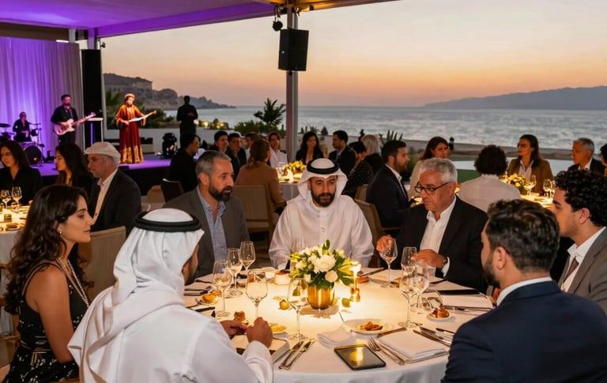

Conferences · AI
GWTS Jordan 2027: Global Women in Tech & AI Summit (3rd edition)
- Dates
- Dates TBA
- Location
- Dead Sea, Jordan
- Format
- In-person
- Category
- AI
- Industry
- Technology / AI / Women in tech
- Organiser
- AFAQ Group
- Official website
- https://gwts.agevnts.com/
About
Official site: April 2027 at the Dead Sea, no exact days or hotel. Previous editions were in Amman (2025, 2026).
Topics: AI, fintech, digital economy, women leadership, startups.
No organiser attendance figure found on official pages (23 Nov 2026). Ranked by an estimated size tier 'small' (our judgement from format and scale, not an official number).